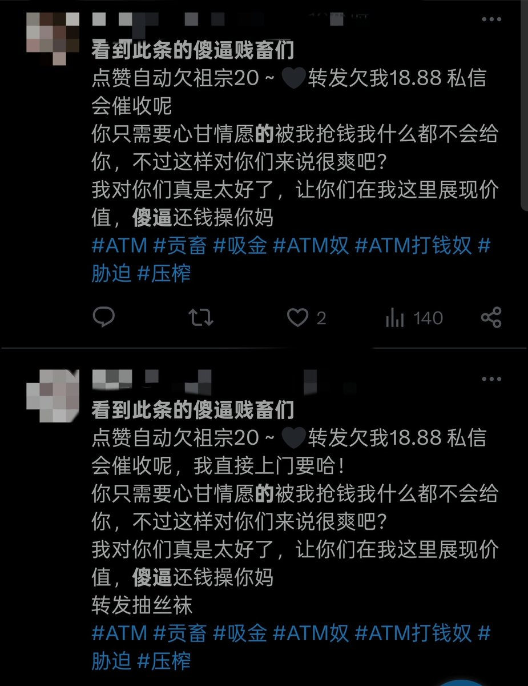
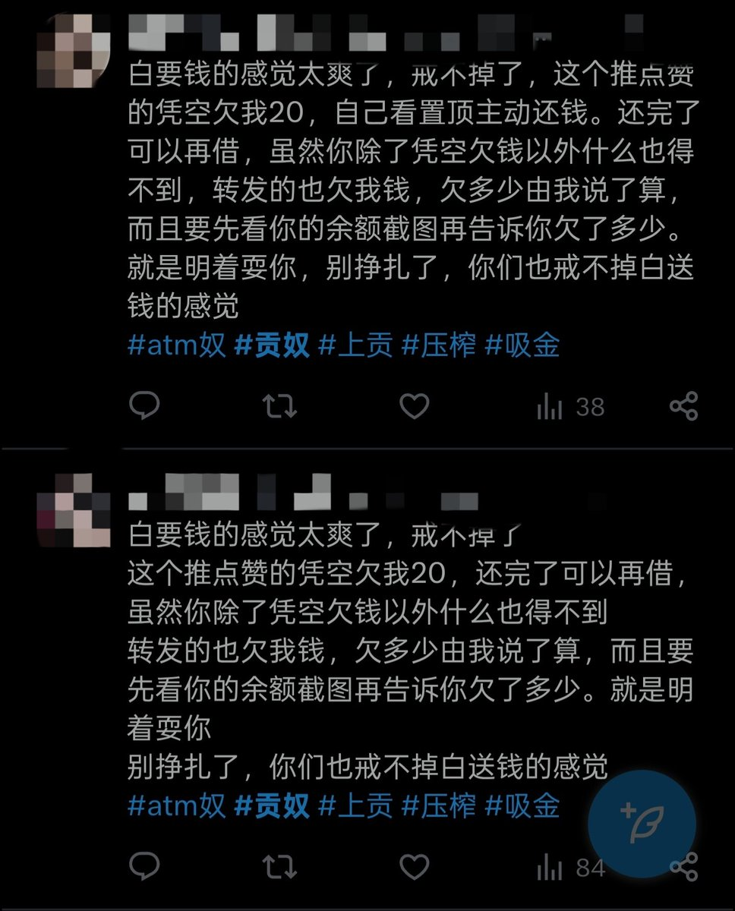

电波系魔女族公主-奏🖤魔女学园院长版～
@xuemingjiai
@zeiaiou 看着想吐w


小浅
@zeiaiou
最近刷推全都是这种内容owo，不仅仅内容上比较低劣，在数量上也已经到了粗制滥造的地步呢，全都在发这样的内容，从点赞数上看这类推文还是有一定的受众，不过小浅对这种推文越来越无感了，大家是什么样的看法呢?
＃戒贡 ＃上贡 ＃白给 ＃压榨 https://t.co/onXV0iVs6u